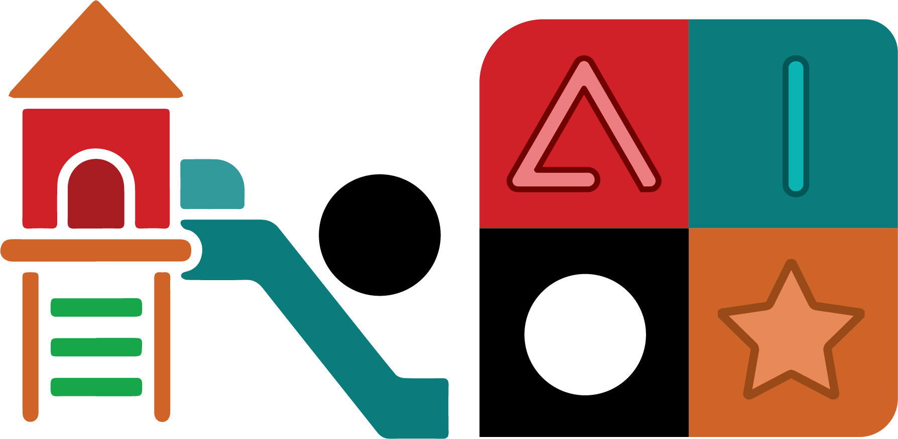
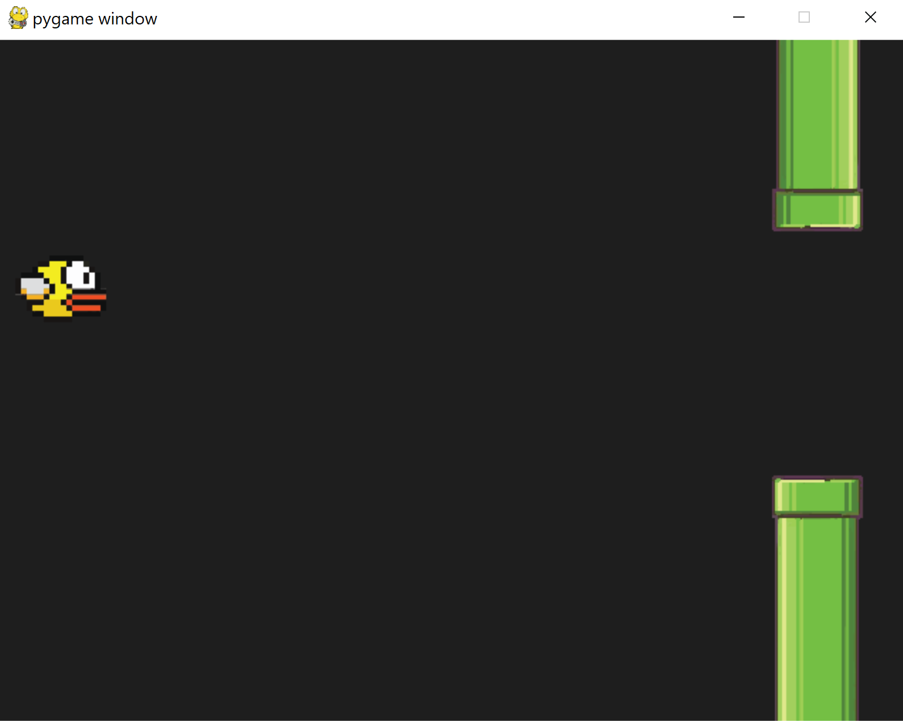

In this Chapter we recreate the game of Flappy Bird. This game gained great popularity around the year 2014. The game became viral, quickly becoming the most downloaded app in the App Store, but despite its success, its creator Dong Nguyen took it out of the market due to polemic in its graphics and the constant complain from frustated users. When the app was taken from the market, some people began selling phones on eBay with the game installed.
So what makes this game so challenging? In this environment we force an agent/user to maintain a character in the "air". We modify the vertical position by pressing a button, which adds vertical velocity while working against gravity.
We begin by opening the rlpp_designer and creating our layout. Our layout should contain:
Export your work and create the rl_output.pt and Model.py files using the rlpp.processor method map_json().

Our pipes are currently not connected, and they are not moving either. Let's modify the method reset found inside the GameManager:
class GameManager():
...
def reset(self):
self.score = 0
self.timer = 0
self.resetTimer = 1_000
self.walls=[]
self.go_wall_1 = Wall([SCREEN[0] + 50, 47],0,"wall",r".\images\pipe_2_32.png",abs(1));self.walls.append(self.go_wall_1)
self.go_wall_0 = Wall([SCREEN[0] + 50, 47 + HEIGHT_GAP],0,"wall",r".\images\pipe_1_32.png",abs(1));self.walls.append(self.go_wall_0)
self.go_wall_1.comp = self.go_wall_0
self.go_wall_0.comp = self.go_wall_1
self.go_wall_1.relPos = "top"
self.go_wall_0.relPos = "bottom"
self.foods=[]
self.all_game_objects = self.static_game_objects + [self.walls,self.foods]
for logo in self.all_game_objects:
for go in logo:
go.reset()
This code takes the two pipes and places them into the same position in the x axis:
[SCREEN[0] + 50, 47]
[SCREEN[0] + 50, 47 + HEIGHT_GAP]
HEIGHT_GAP = 350
The walls (pipes) also contain two new variables:
We are almost done setting up our pipes! However, the pipes are still not moving, they are supposed to help us create new pipes (procedural generation), and they are also supposed to help us reward the user. We need to make changes to the internal structure of the class Wall to achieve this:
class Wall(GameObject):
def __init__(self, position, angle, object_type, img_path, scale_factor):
super().__init__(position, angle, "wall", img_path, scale_factor)
self.has_instantiated = False
self.has_rewarded = False
def update_position(self):
self.x -= PIPE_VEL
We created two new boolean attributes inside the Wall, named has_instantiated and has_rewarded, in charge of telling if a pipe has helped created a new set of pipes and if the pipe has rewarded the agent upon meeting certain conditions.
Now, let's make sure to call the new method update_position() inside the update() method of the GameManager.
class GameManager():
...
def update(self):
[pygame.quit() for event in pygame.event.get() if event.type == pygame.QUIT]
for wall in self.walls:
wall.update_position()
if wall.x <= -100:
self.walls.remove(wall)
...
It's time to extract information on the envrionment in the form of penalties and rewards. The game will be considered to be over when the bird touches the ceiling/floor or any of the pipes. If the bird successfully navigates through the gap in between two pipes, we give a high reward. The issue is that, compared to most frames, those representing the bird passing between pipes are rare, affecting training. We fix this issue by giving our agent an additional reward for staying in the air. We will need three helper functions:
We place this method in the GameManager class because this object has access to all the walls (pipes).
class GameManager():
...
def touching_walls(self,agent):
for wall in self.walls:
if wall.rect.colliderect(agent):
return True
if agent.rect.top <= 0 or agent.rect.bottom >= SCREEN[1]:
return True
return False
We add a new method to our GameManager class:
def passing_walls(self,agent):
reward = 0
create_new = False
for wall in self.walls:
if wall.x <= agent.x and not wall.has_rewarded:
reward += 5
wall.has_rewarded = True
if wall.x <= agent.x + 400 and not wall.has_instantiated and wall.relPos == "top":
wall.has_instantiated = True
random_placing = random.randint(-60,60)
self.go_wall_1 = Wall([SCREEN[0] + 50, random_placing],0,"wall",r".\images\pipe_2_32.png",abs(1));self.walls.append(self.go_wall_1)
self.go_wall_0 = Wall([SCREEN[0] + 50, random_placing + HEIGHT_GAP],0,"wall",r".\images\pipe_1_32.png",abs(1));self.walls.append(self.go_wall_0)
self.go_wall_1.comp = self.go_wall_0
self.go_wall_1.relPos = "top"
self.go_wall_0.comp = self.go_wall_1
self.go_wall_0.relPos = "bottom"
return reward
In this method, we go through all pipes again, asking two questions per pipe. First we ask if the agent has passed the wall by comparing their position in the x axis, and give a reward while also deactivating the pipe to prevent this pipe from rewarding the agent again afterwards.
The second question is connected to instantiation. In this game, the total number of pipes created depend on the amount of time the agent has survived the game. This means we have to come up with a set of rules to determine when and how to generate new pipes. We will create a new set of pipes if the top (and only the top) pipe is currently 400 pixels to the right of the agent. We then deactivate the pipe so it doesn't instantiate new ones afterwards, and finally we create a new pair of pipes the same way we did in the reset method of the GameManager.
This method has the purpose of rewarding or penalizing our agent based on its distance to the gap between two pipes, in the y axis. It works as follows:
def in_middle_walls(self,agent):
reward = 0
candidate = None
shortest_distance = None
for wall in self.walls:
if wall.relPos == "top":
d = wall.x - agent.x
if shortest_distance is None or (d > 0 and shortest_distance > d):
shortest_distance = d
candidate = wall
if candidate is not None:
# reward if within gap of next two pipes
if agent.y < candidate.comp.rect.top and agent.y > candidate.rect.bottom:
scaled_distance_agent_center = 1 - abs((candidate.rect.bottom + HEIGHT_GAP//2) - agent.y)/(HEIGHT_GAP//2)
reward = scaled_distance_agent_center * 3
# penalty if outside the gap in between the next two pipes
else:
scaled_distance_agent_center = abs((candidate.rect.bottom + HEIGHT_GAP//2) - agent.y)/(SCREEN[1]//2)
reward = -scaled_distance_agent_center * 5
return reward
This method works by first finding the pipe that is closest to the agent. By using two variables candidate and shortest_distance, we can look at every pipe in the game, focusing only on top pipes because we can access the bottom pipe with the variable comp inside the pipe. We calculate the distance between the pipe and the agent, and if the pipe is to the right of the agent, and the distance is shorter than the last best pipe, we update our candidate to be this new top pipe.
Afterwards we determine if the agent's position in y is overlapping the range of pixels covered by the gap, and if so, we calculate the distance from the middle of the gap to the agent to know how much reward we should give. The closer the agent to the middle of the gap, the higher the reward with a maximum of 5 per frame.
However, if the agent's position in y is not overlapping the gap between two pipes, the reward turns into a penalty. The farter the agent is to the gap, the higher the penalty.
We finalize by calling these three methods for every agent in the update method of our GameManager class:
class GameManager():
...
def update(self):
[pygame.quit() for event in pygame.event.get() if event.type == pygame.QUIT]
for wall in self.walls:
wall.update_position()
if wall.x <= -100:
self.walls.remove(wall)
for agent in self.agents:
if not agent.isDead:
isGameOver = self.touching_walls(agent)
reward = self.passing_walls(agent)
reward += self.in_middle_walls(agent)
# get numerical interpretation of environment
previous_env = agent.get_state(self.walls)
# use model to predict a move
new_move = agent.get_action(previous_env)
# apply the move
reward, done, score = agent.play_step(new_move, isGameOver, reward)
# get new state from applied move
new_env = agent.get_state(self.walls)
# train short memory
agent.train_short_memory(previous_env, new_move, reward, new_env, done)
# add results to memory
agent.remember(previous_env, new_move, reward, new_env, done)
# if the game is out of agents, then game is over. Reset the game and train long memory
agents_alive = sum([1 for agent in self.agents if not agent.isDead])
if agents_alive == 0:
self.reset()
for agent in self.agents:
agent.n_games += 1
print(agent.n_games)
print(agent.epsilon)
agent.train_long_memory()
Notice that we are passing our agent to each of these functions, and the fact that each function returns something. In the last function self.in_middle_walls(), we use += instead of = so we can add to the current reward rather than setting the reward to a new value. Let's dive into how the play_step method enables us to control the agent's actions!
In addition, please take note on the fact we give these returns to our agent's play_step() method with the names isGameOver and reward.
Each agent in our game has its own method play_step (among many other things). Let's add the following behavior to our agent's play_step method:
class Agent(GameObject):
...
def play_step(self,action, isDead, reward):
self.update_velocity(action)
self.update_position()
self.isDead = isDead
if self.isDead:
reward = -15
else:
reward = reward
score = 0
return reward, self.isDead, score
The agent uses the actions, represented as a one-hot-vector with shape [int,int], to control when to flap its wings, therefore making it go up while fighting the forces of gravity. We also provide a penalty is the agent's state is now "dead". To encode the physics of our game, we call upon two helper methods update_velocity(action) and update_position(). We can place these methods inside of our Agent class as well.
class Agent(GameObject):
...
def update_velocity(self,action):
if action == [1,0]:
self.dy -= self.jumpForce
self.last_flap = 0
else:
self.last_flap += 1
if self.last_flap >= self.max_flap:
self.last_flap = self.max_flap
self.dy += self.ddy
if self.dy >= self.maxVel:
self.dy = self.maxVel
if self.dy <= -self.maxVel:
self.dy = -self.maxVel
def update_position(self):
self.y += self.dy
The method update_velocity(action) takes the action received by the agent and evaluates if the array of integers that represents the action has a digit 1 in the first position (index 0). When it does, the agent's velocity is updated by substraction, eventually leading the agent to move upwards (because the y axis is flipped relative to how we normally think about math graphs, making going down positive and up negative). We also set a new attribute of the agent self.last_flap to 0. This parameter will help us create a representation of the environment where the agent knows when was the last time it made a flap.
However, if the agent's action is not [1,0], and instead [0,1], we update the self.last_flap counter, making sure it doesn't go over a maximum value self.max_flap.
Finally, the vertical velocity of the agent is updated by the force of gravity self.ddy, making sure the value of agent's velocity doesn't go over self.maxVel, either positive or negative.
The second method update_position() is rather simple. We use the velocity of the agent to modify and update its position in the vertical axis.
Before we continue, let's create the attributes we just used in the Agent's constructor (__init__) and reset methods.
class Agent(GameObject):
def __init__(self, position, angle, object_type, img_path, scale_factor):
super().__init__(position, angle, "agent", img_path, scale_factor)
self.n_games = 0
self.epsilon = 0 # randomness
self.gamma = 0.96 # discount rate
self.memory = deque(maxlen=MAX_MEMORY) # popleft()
self.model = Linear_QNet(WORLD_STATES, 256, ACTION_STATES)
self.trainer = QTrainer(self.model, lr=LR, gamma=self.gamma)
self.ddy = 0.20
self.maxVel = 3
self.jumpForce = 0.6
self.scaled_max_distance_to_pipe = SCREEN[0] + 50 - self.x
self.max_flap = 50
def reset(self):
super().reset()
self.isDead = False
self.last_flap = self.max_flap
At this point, our agent is equipped with consequences to its actions, in the form of rewards, penalties and an internal state that declares whether the agent is still in the game. It's time to give "eyes" to our bird by providing a mathematical representation of it surrounding. This is known as the state representation of the agent's environment.
We add the following changes to the get_state() method of the Agent class:
class Agent(GameObject):
...
def get_state(self, pipes):
state = [0 for _ in range(WORLD_STATES)]
vertical_position = self.y / SCREEN[1]
relative_vel = self.dy/self.maxVel
candidate = None
shortest_distance = None
for pipe in pipes:
d = pipe.x - self.x
if shortest_distance is None or (shortest_distance > d and pipe.relPos=="top"):
shortest_distance = d
candidate = pipe
if candidate is not None:
distance_next_pipe = (candidate.rect.left - self.x)/self.scaled_max_distance_to_pipe
distance_agent_top_pipe = (self.rect.top - candidate.rect.bottom)/SCREEN[1]
distance_agent_bottom_pipe = (self.rect.bottom - candidate.comp.rect.top)/SCREEN[1]
time_since_last_flap = self.last_flap / self.max_flap
state = [
vertical_position,
relative_vel,
distance_next_pipe,
distance_agent_top_pipe,
distance_agent_bottom_pipe,
time_since_last_flap,
]
return np.array(state, dtype=float)
The components making our state are calculated as follows:
To extract the information relative to the closest pipe, we need to iterate with a for loop across all pipes, focusing only on the top pipes, and asking if it is closer to the agent. We do this with two variables candidate and shortest_distance. Our candidate will store the actual top pipe, and the shortest_distance is used to compare across pipes and help us keep the pipe with the smallest value.
Our agent is really to begin training! If you want, you can also animate the bird by adding the method remap, that takes the current velocity of the bird and uses it to rotate the sprite:
class Agent(GameObject):
...
def remap(self,value, from1, to1, from2, to2):
return (value - from1) / (to1 - from1) * (to2 - from2) + from2
...
def update_position(self):
self.y += self.dy
orig_image = pygame.image.load(self.image_path)
self.image = pygame.transform.rotate(orig_image,self.remap(self.dy,-self.maxVel,self.maxVel,90,-90))